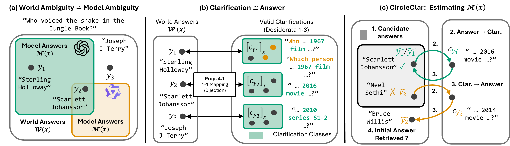
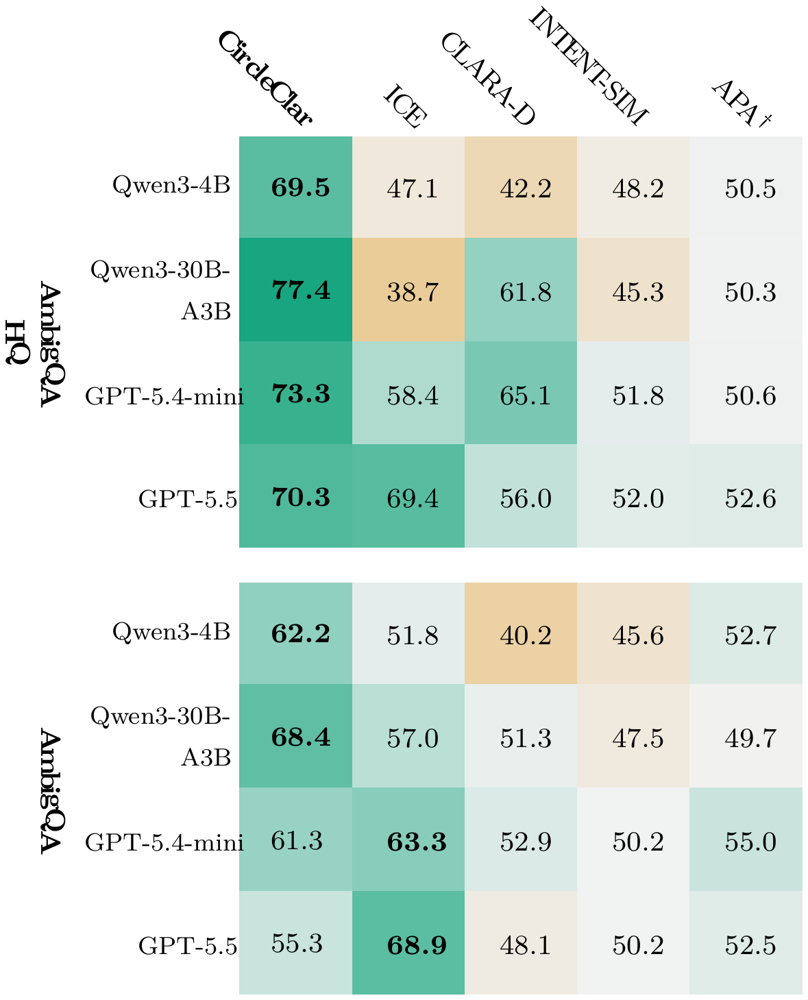
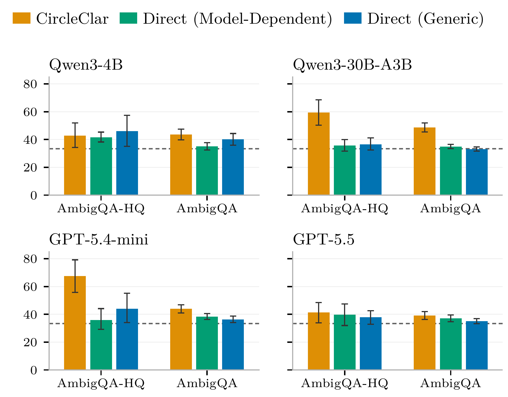

(a) the problem
World ambiguity alone is insufficient
The world answer support is fixed by the input, while the model-realizable support depends on the model’s knowledge.
Estimating Model-Dependent Input Ambiguity
Technical University of Munich
LP4FM Workshop @ NeurIPS 2026
Ambiguity is usually treated as a property of the input. We study the ambiguity a model actually faces, given what it knows.

View full size(a) the problem
The world answer support is fixed by the input, while the model-realizable support depends on the model’s knowledge.
(b) the idea
Each clarification class identifies exactly one valid answer to the original input.
(c) the method
CircleClar estimates the model-realizable support by testing whether candidate answers are recovered through answer–clarification–answer cycles.
Ambiguous inputs can admit multiple interpretations, each potentially yielding a different answer. Existing work largely treats this ambiguity as a property of the input, yet for a particular language model, only some alternatives may be known and answerable. We therefore distinguish world ambiguity, capturing all alternatives admitted by an input, from model ambiguity, capturing those accessible to the responding model. To characterize these alternatives, we formalize natural-language clarifications through three desiderata: uniqueness, faithfulness, and answer equivalence. We show that these desiderata induce a one-to-one correspondence between valid answers and equivalence classes of clarifications, implying that any interpretation can be represented either by its answer or by the clarifications that uniquely express it. We leverage this correspondence to introduce CircleClar, a black-box method that estimates the set of answers available to a model by checking consistency along an answer–clarification–answer cycle. Across open-domain QA and executable Text-to-SQL, CircleClar achieves strong recovery of these answer sets. In QA, the recovered support yields the strongest overall performance in model-dependent ambiguity detection and enables effective selection among answering, clarifying, and abstaining. Together, these results demonstrate the practical value of a model-dependent view of ambiguity and its characterization through an answer-clarification correspondence.
Four models on open-domain QA (AmbigQA-HQ, AmbigQA) and Text-to-SQL (AMBROSIA).
Set F1 ± std. / EM (%) · best · second-best
Swipe to see all models, or tap the table to enlarge →
| Dataset | Method | Qwen3-4B | Qwen3-30B-A3B | GPT-5.4-mini | GPT-5.5 |
|---|---|---|---|---|---|
| AmbigQA-HQ | ICE | 39.23 ± 46.09EM: 33.00% | 52.52 ± 41.97EM: 33.00% | 63.93 ± 34.35EM: 31.00% | 77.91 ± 29.61EM: 50.00% |
| Sampling-50 | 33.07 ± 43.78EM: 25.00% | 43.63 ± 40.11EM: 22.00% | 55.51 ± 35.23EM: 24.00% | 61.79 ± 27.13EM: 21.00% | |
| 1-Enumeration | 23.42 ± 38.45EM: 15.00% | 41.38 ± 36.37EM: 12.00% | 59.40 ± 34.74EM: 28.00% | 68.48 ± 29.52EM: 35.00% | |
| CircleClar | 60.02 ± 46.26EM: 52.00% | 64.88 ± 40.76EM: 49.00% | 74.09 ± 34.78EM: 54.00% | 68.85 ± 31.59EM: 35.00% | |
| AmbigQA | ICE | 33.71 ± 44.54EM: 26.90% | 41.04 ± 42.63EM: 25.50% | 55.18 ± 42.50EM: 35.50% | 63.93 ± 35.82EM: 31.70% |
| Sampling-50 | 24.85 ± 40.58EM: 19.60% | 31.66 ± 42.25EM: 22.30% | 39.56 ± 40.10EM: 20.60% | 44.84 ± 36.69EM: 17.80% | |
| 1-Enumeration | 14.33 ± 32.46EM: 10.20% | 24.50 ± 33.90EM: 7.40% | 38.28 ± 36.54EM: 12.30% | 46.93 ± 35.57EM: 16.80% | |
| CircleClar | 48.28 ± 48.53EM: 44.70% | 46.26 ± 45.28EM: 35.00% | 46.55 ± 41.90EM: 27.60% | 49.32 ± 36.49EM: 19.90% | |
| AMBROSIA | ICE | 44.44 ± 37.49EM: 17.71% | 36.41 ± 33.73EM: 8.33% | 41.84 ± 32.92EM: 8.33% | 48.02 ± 29.95EM: 8.33% |
| Sampling-50 | 34.44 ± 40.46EM: 17.71% | 39.50 ± 36.61EM: 11.46% | 36.13 ± 31.34EM: 5.21% | 45.51 ± 31.33EM: 7.29% | |
| 1-Enumeration | 38.70 ± 34.62EM: 11.46% | 45.45 ± 36.91EM: 18.75% | 53.26 ± 37.99EM: 28.12% | 51.98 ± 32.31EM: 11.46% | |
| CircleClar | 42.64 ± 40.67EM: 21.88% | 51.39 ± 39.76EM: 25.00% | 56.39 ± 37.84EM: 26.04% | 48.63 ± 34.53EM: 12.50% |
CircleClar performs strongly across datasets, achieving particularly large gains over baselines on smaller models and on the curated AmbigQA-HQ benchmark.
See the paper for experimental setup and consistency-filtering analysis.
AUROC (%) · 50 is chance · bold: best per row

View full sizeCircleClar is strongest overall; its clearest gains occur on AmbigQA-HQ.
Balanced accuracy (%) · error bars: 95% bootstrap CIs · dashed line: constant policy

View full sizeCircleClar leads in most settings when deciding whether to abstain, clarify, or answer.
@misc{tang2026clarification,
title = {What Is a Clarification? Estimating Model-Dependent Input Ambiguity},
author = {Tang, Jingqin and Tomov, Tim and Schmidt, Sebastian and
Fuchsgruber, Dominik and G{\"u}nnemann, Stephan},
year = {2026}
}